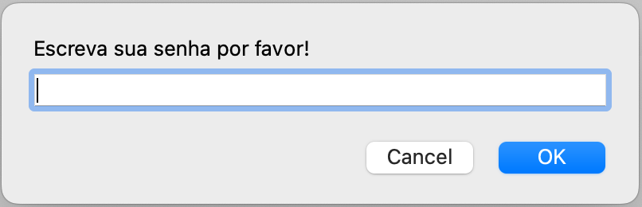
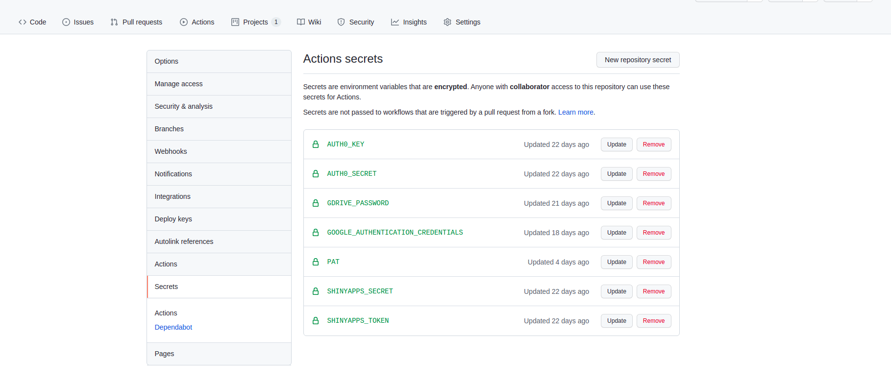

Introdução
As vezes precisamos usar alguma senha/Token/Key para rodar um código, como por exemplo ao usar uma API que solicita autenticação. Mas isso significa que devemos escrever a senha no próprio script .R, por exemplo?
Não! Inclusive isso é um pouco perigoso. Imagina armazenar a senha para um serviço pago, esquecer e disponibilizar o script no GitHub? É receita para receber uma notificação do cartão de crédito cobrando algo que nem usamos… É, já ouvi casos assim!
Então neste post trago algumas dicas para evitar salvar as senhas nos scripts quando estiver programando.
Variáveis de ambiente
Uma forma de fazer isso é com as variáveis de ambiente (environment variables). Não vou detalhar o conceito de ambientes mas deixei um link nas referências, ao final do post.
Simplificando, as variáveis de ambientes são objetos que são carregados ao iniciar a sessão do R. Então eles ficarão disponíveis para uso, apesar de não aparecer no painel Environment do RStudio.
Uma forma de saber quais são as nossas variáveis de ambiente é usando a função Sys.getenv() sem argumentos. Atenção, várias variáveis de configuração irão aparecer no output e não recomendo alterá-las.
Sys.getenv()
__CF_USER_TEXT_ENCODING
0x1F5:0x0:0x47
__CFBundleIdentifier
org.rstudio.RStudio
CLICOLOR_FORCE 1
COMMAND_MODE unix2003
DISPLAY :0
EDITOR vi
GIT_ASKPASS rpostback-askpass
GITHUB_PAT REMOVI-DO-OUTPUT
HOME /Users/beatrizmilz
LANG en_US.UTF-8
LaunchInstanceID
CE64F966-8CED-4F36-98D6-0965383D7CE7
LC_CTYPE en_US.UTF-8
LD_LIBRARY_PATH
LN_S ln -s
LOGNAME beatrizmilz
MAKE make
MPLENGINE tkAgg
PAGER /usr/bin/less
PATH /opt/homebrew/bin:/opt/homebrew/sbin:/usr/local/bin:/usr/bin:/bin:/usr/sbin:/sbin:/Users/beatrizmilz/Applications/quarto/bin:/Library/TeX/texbin:/usr/texbin:/Applications/RStudio.app/Contents/MacOS:/Users/beatrizmilz/Library/TinyTeX/bin/universal-darwin
PDF_TABLES REMOVI-DO-OUTPUT
PYTHONIOENCODING
utf-8
R_BROWSER /usr/bin/open
R_BZIPCMD /usr/bin/bzip2
R_CLI_HAS_HYPERLINK_IDE_HELP
true
R_CLI_HAS_HYPERLINK_IDE_RUN
true
R_CLI_HAS_HYPERLINK_IDE_VIGNETTE
true
R_DOC_DIR /Library/Frameworks/R.framework/Resources/doc
R_GZIPCMD /usr/bin/gzip
R_HOME /Library/Frameworks/R.framework/Resources
R_INCLUDE_DIR /Library/Frameworks/R.framework/Resources/include
R_LIBS_SITE /Library/Frameworks/R.framework/Resources/site-library
R_LIBS_USER /Users/beatrizmilz/Library/R/arm64/4.2/library
R_PAPERSIZE a4
R_PDFVIEWER /usr/bin/open
R_PLATFORM aarch64-apple-darwin20
R_PRINTCMD lpr
R_QPDF /Library/Frameworks/R.framework/Resources/bin/qpdf
R_RD4PDF times,inconsolata,hyper
R_SESSION_TMPDIR
/var/folders/st/0346cszj61928zc133bfr8dm0000gn/T//RtmptDuZaS
R_SHARE_DIR /Library/Frameworks/R.framework/Resources/share
R_STRIP_SHARED_LIB
strip -x
R_STRIP_STATIC_LIB
strip -S
R_SYSTEM_ABI macos,gcc,gxx,gfortran,gfortran
R_TEXI2DVICMD /opt/R/arm64/bin/texi2dvi
R_UNZIPCMD /usr/bin/unzip
R_ZIPCMD /usr/bin/zip
RMARKDOWN_MATHJAX_PATH
/Applications/RStudio.app/Contents/Resources/resources/mathjax-27
RS_PPM_FD_READ 71
RS_PPM_FD_WRITE
102
RS_RPOSTBACK_PATH
/Applications/RStudio.app/Contents/rpostback
RS_SHARED_SECRET
aae3fa0b-2378-4433-91b1-23ef6bfbcd3a
RSTUDIO 1
RSTUDIO_CLI_HYPERLINKS
true
RSTUDIO_CONSOLE_COLOR
256
RSTUDIO_CONSOLE_WIDTH
59
RSTUDIO_FALLBACK_LIBRARY_PATH
/var/folders/st/0346cszj61928zc133bfr8dm0000gn/T/rstudio-fallback-library-path-LeirDE
RSTUDIO_PANDOC /Applications/RStudio.app/Contents/MacOS/quarto/bin/tools
RSTUDIO_PROGRAM_MODE
desktop
RSTUDIO_SESSION_PID
99417
RSTUDIO_SESSION_PORT
50432
RSTUDIO_USER_IDENTITY
beatrizmilz
RSTUDIO_WINUTILS
bin/winutils
SECURITYSESSIONID
186b0
SED /usr/bin/sed
SHELL /bin/zsh
SSH_ASKPASS rpostback-askpass
SSH_AUTH_SOCK /private/tmp/com.apple.launchd.rgFEwrNe29/Listeners
TAR /usr/bin/tar
TERM xterm-256color
TMPDIR /var/folders/st/0346cszj61928zc133bfr8dm0000gn/T/
TZDIR /var/db/timezone/zoneinfo
USER beatrizmilz
XPC_FLAGS 0x0
XPC_SERVICE_NAME
0A função Sys.setenv() permite que você salve a senha/token nas variáveis de ambiente. Cuidado, rode essa etapa no console e não salve no script (pois justamente queremos não armazenar as senhas no script, certo?).
Sys.setenv(MINHA_SENHA = 1234)Para buscar o valor salvo na variável, pode usar a função Sys.getenv(). Essa função podemos usar no nosso script sem problemas!
Sys.getenv("MINHA_SENHA")[1] "1234"Indo além com a ajuda do usethis
As variáveis de ambiente podem ser vinculadas ao .Rproj ativo, ou ao usuário do computador. Elas ficam salvas no arquivo .Renviron. Para abrir o arquivo e ver as variáveis de ambiente salvas, você pode usar a função usethis::edit_r_environ():
# Abre as variáveis de ambiente para o usuário do computador
usethis::edit_r_environ(scope = "user")
#> • Modify '/Users/beatrizmilz/.Renviron'
#> • Restart R for changes to take effect
# Abre as variáveis de ambiente para o projeto ativo
usethis::edit_r_environ(scope = "project")
#> ✔ Setting active project to '/Users/beatrizmilz/Documents/GitHub/blog-en'
#> • Modify '.Renviron'
#> • Restart R for changes to take effectO padrão para armazenar variáveis neste arquivo é:
NOME_VAR='SENHAAQUI12345'Atenção! Depois de alterar o arquivo .Renviron, é necessário reiniciar o R para que as mudanças sejam consideradas. Isso porque esse arquivo é carregado ao iniciar o R.
Atenção 2: Caso você use um arquivo .Renviron vinculado ao seu projeto .Rproj, cuidado ao subir esse arquivo para o GitHub, é perigoso pois pessoas poderão ver suas senhas. Se o seu repositório for público, é essencial que você adicione ele no .gitignore, assim ele será ignorado pelo Git. A função usethis::use_git_ignore() pode nos ajudar nisso:
usethis::use_git_ignore(".Renviron")
#> ✔ Adding '.Renviron' to '.gitignore'Solicitar a senha
E quando queremos que a pessoa usuária possa sempre escrever a senha? Existe uma função para isso: rstudioapi::askForPassword(). Podemos inclusive escrever a frase que será mostrada ao perguntar a senha. A senha digitada será retornada como um texto, e podemos salvar em um objeto para utilizar posteriormente no que for necessário.
senha_informada <- rstudioapi::askForPassword(
"Escreva sua senha por favor!"
)
GitHub Actions
E quando precisamos usar senhas em códigos rodados com GitHub Actions (GHA)? Se você não conhece nada sobre GHA, eu tenho alguns posts sobre isso!
Quando estamos usando GHA, podemos adicionar senhas na sessão SECRETS do GitHub. Assim ninguém (exceto você, quando cria um SECRETS), verá a senha/credenciais.
Isso fica nas configurações do repositório, e o link usa esse padrão:
https://github.com/SEU-USUARIO/SEU-REPOSITORIO/settings/secrets/actionsExemplo de um repositório privado meu:

Também é preciso adaptar o código do action para buscar essa variável no Secrets. Exemplo de código:
- name: Execute Script
env:
GITHUB_PAT: ${{ secrets.GITHUB_PAT }}
NOME_VAR: ${{ secrets.NOME_VAR }}
run: |
Rscript "seu_script.R"Com isso é possível acessar essas variáveis com senha, no script usando a função Sys.getenv('NOME_VAR') que mostrei acima.
Mais camadas de segurança
Para mais camadas de segurança, recomendo a leitura da documentação do pacote httr2, no trecho sobre Secret management. Nesse trecho, além de apresentar a opção utilizando a função usethis::edit_r_environ(), também é apresentado as funções httr2::secret_encrypt() e htt2::secret_decrypt().
Eu ainda não testei essas funções pois o pacote httr2 é bem recente. Segundo o autor do pacote (o Hadley Wickham), com essas funções é possível usar criptografia para lidar com as senhas/tokens.
Conclusão
Espero que este post seja interessante para você, e que as suas senhas estejam sempre protegidas! Bons estudos e até a próxima!
Referências
Agradecimentos
Julio Trecenti, pela leitura prévia e sugestões feitas no texto.
Tive a ideia de escrever esse post ao responder uma pergunta feita pela aluna Mari Ribeiro, em um curso da Curso-R. Obrigada Mari!